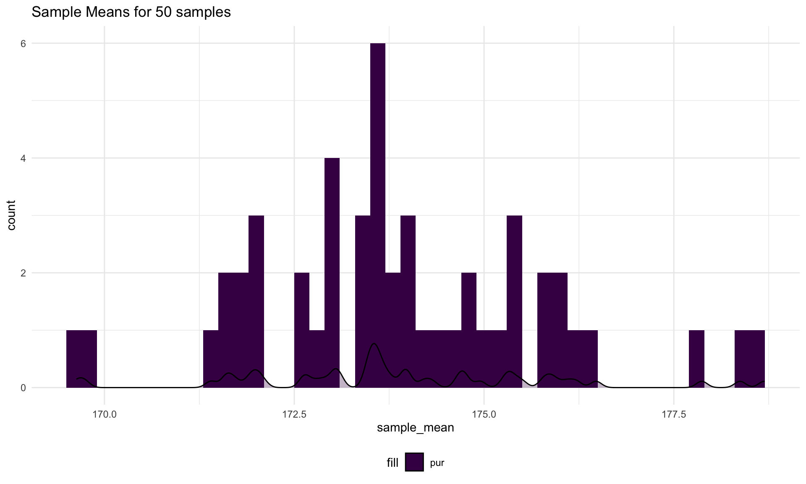

The event of interest is the cancer spread for women who have a high count of blood vessels in their breast tumors. The key probability terms mentioned in the problem and the mathematical formula is written below.
Let \(D\) denotes the event for women who get the cancers spread from breast tumors, Let \(D^c\) denotes the event for women who do not get the cancers spread from breast tumors. Let \(E\) denotes the event for women who have high counts of blood vessels in their breast tumors. Let \(E^c\) denotes the event for women who have low counts of blood vessels in their breast tumors.
From the given information, we can have \(P(E |D)= 0.85\), \(P(E^c | D^c)= 0.90\), and \(P(D) = 0.02\).
The probability of cancer spread given a high count of blood vessels in their breast tumors is \[
\begin{aligned}
P(D|E)
&=\frac{P(D\cap E)}{P(E)}\\
&=\frac{P(E|D)P(D)}{P(E\cap \Omega)}\\
&=\frac{P(E|D)P(D)}{P(E\cap (D\cup D^c))}\\
&=\frac{P(E|D)P(D)}{P((E\cap D)\cup (E\cap D^c))}\\
&=\frac{P(E|D)P(D)}{P(E\cap D)+P (E\cap D^c)}\\
&=\frac{P(E|D)P(D)}{P(E| D)P(D)+P (E|D^c)P(D^c)}\\
&=\frac{0.85\times 0.02}{0.85\times 0.02+(1-0.9)\times (1-0.02)}\\
&= \frac{0.017}{0.017+0.098}\\
&\approx 0.1478
\end{aligned}
\] Thus, the probability of cancer spread given a high count of blood vessels in breast tumors is approximately 0.1478
From the given information, I use two-sample independent t-test to do this test since there are two groups of different people.
Let students who were tested with Mozart music during their midterms period be the sample group one and let students who were tested without Mozart music during their midterms period be the sample group two. To determine whether there is sufficient evidence to claim that listening to Mozart boosts the IQ scores, we need to determine whether the mean IQ scores for two population of two groups are same. Let \(X_{1i}\) denotes the IQ scores of ith students in group one and \(X_{2j}\) denotes the IQ scores of jth students in group two. \(\sigma^2_1\) denotes the variance of IQ score of population for group one and \(\sigma^2_2\) denotes the variance of IQ scores of population for group two. Let \(\mu_1\) denotes the mean of IQ scores of population for group one and \(\mu_2\) denotes the variance of IQ scores of population for group two.
First, I use F-test to test the equality of variances. The hypotheses are \[
\begin{split}
H_0 = \sigma^2_{1} = \sigma^2_{2} \\
H_1 = \sigma^2_{1} \neq \sigma^2_{2} \\
\end{split}
\] With significance level 10% pre-specified, the test statitsics is calculated as \[
F_{stat}= \frac {s^2_{1}}{s^2_{2}} \sim F_{n_1-1,n_2-1} \space under \ the \ Null \\
F_{stat}= \frac {s^2_{1}}{s^2_{2}} \sim F_{14,14} \space under \ the \ Null \\
F_{stat}= \frac {13.78^2}{12.58^2} = 1.198472
\] The critical values are computed as
\[
F_{crit1} = F_{n_1-1,n_2-1,1-\frac{\alpha}{2}}=F_{14,14,0.95}=2.483726\\
F_{crit2} = F_{n_1-1,n_2-1,\frac{\alpha}{2}}=F_{14,14,0.05}=0.4026209
\]
Decision rules are below
\[
Reject \space H_0: if \space F_{stat} > F_{n_1-1,n_2-1,1-\frac{\alpha}{2}} \space or \space F_{stat} <F_{n_1-1,n_2-1,\frac{\alpha}{2}}\\
Fail \space to \space reject \space H_0: if\space F_{n_1-1,n_2-1,\frac{\alpha}{2}}\leq F_{stat}\leq \space F_{n_1-1,n_2-1,1-\frac{\alpha}{2}}
\] Because \(F_{crit2}=0.4026209<F_{stat}=1.198472 < F_{crit1}=2.483726\), we fail to reject \(H_0\) and conclude that there is not enough evidence to support a difference in the two population variances given the 10% significance level.
Then I will assess the equality of mean, and the hypotheses are below
\[
\begin{aligned}
H_0: \mu_1 = \mu_2\\
H_1: \mu_1 < \mu_2
\end{aligned}
\] With significance level 0.05, compute the test statistic and critical value for t
\[
\begin{aligned}
s
&= \sqrt{\frac{(n_1-1)s_1^2+(n_2-1)s_2^2}{n_1+n_2-2}}\\
&=\sqrt{\frac{(15-1)13.78^2+(15-1)12.58^2}{15+15-2}}\\
&=\sqrt{\frac{14\times13.78^2+14\times12.58^2}{15+15-2}}\\
&=13.19343\\
t_{stat}
&= \frac{\mu_1-\mu_2}{s\sqrt{(\frac{1}{n_1}+\frac{1}{n_2})}} \sim t_{n_1+n_2-2} \space under \space H_0\\
&=\frac{112.93-118.07}{13.19343\sqrt{(\frac{1}{15}+\frac{1}{15})}}\\
&=-1.065546\\
t_{crit}
&=t_{n_1+n_2-2, \alpha}\\
&=t_{15+15-2, \alpha}\\
&=t_{28,0.1}\\
&=-1.312527
\end{aligned}
\]
Under the significance level \(\alpha = 0.1\), the decision rules are
\[
Reject \space H_0: \space if \space t_{stat} < t_{n_1+n_2-2,\alpha}\\
Fail \space to \space reject \space H_0: \space if \space t_{stat} \geq t_{n_1+n_2-2,\alpha}
\] Because \(t_{stat}=-1.065546 \geq t_{crit}=-1.312527\), we fail to reject \(H_0\) and conclude that under the significance level 10%, there is not enough evidence to reject that the mean of IQ scores of two groups is same, which means there is no sufficient evidence to claim that listening to Mozart boosts the IQ scores.
The one-sided 90% confidence interval with unknown but equal variances for \(\mu_1-\mu_2\) is
\[
(-\infty , \bar{X_1}-\bar{X_2}-t_{n_1+n_2-2,\alpha}\cdot s\cdot \sqrt{\frac{1}{n_1}+\frac{1}{n_2}})\\
(-\infty , 112.9333-118.0667-t_{15+15-2,0.1}\times 13.19343\times \sqrt{\frac{1}{15}+\frac{1}{15}})\\
(-\infty , 112.9333-118.0667-t_{28,0.1}\times 13.19343\times \sqrt{\frac{1}{15}+\frac{1}{15}})\\
(-\infty ,1.189844)
\]
The interpretation of 90% confidence level is that we have 90% confidence that the true difference of mean of IQ scores for population of students who do not listen to Mozart music and population of students who listen to Mozart music during their midterms period will fall into the 90% confidence interval which is \((-\infty, 1.189844)\).
Since the 2742 men is the entire population and it is normally distributed, the population follows \(Norm(\mu,\sigma^2)\), which is \(Norm(174,7.7^2)\).
I use R to select a random sample with replacement of 16 men from population
The corresponding mean of the population is 176.1059274
I use R to select 50 random sample with replacement of 16 men from population
And the plot of the distribution of the 50 sample means is below 
According to the central limit theorem, we know that if the population distribution is normal (or sample size greater than 30), then the sampling distribution is approximately normal for all sample sizes. Since in this situation, the 2742 men is the population and the mean height of population is normally distributed, the mean height of mean of sample which is selected from the population will also be normally distributed. From the plot in part 2), we can see that the mean height of 50 samples which are randomly selected from the population of 2742 men is normally distributed, which supports the central limite theorem(CLT).
Since there are three samples and I need to test if there is a significant difference in the mean ln(ERG) between three groups, I choose ANOVA methods to do the test.
Let \(\mu_i\) denotes the mean ln(ERG) for population of ith group. Since I need to test if there is a significant difference in the mean ln(ERG) between three group, the hypotheses are below
\[
\begin{aligned}
&H_0 : \mu_1 = \mu_2 = \mu_3(which \space means \space the \space means \space of \space ln(ERG) \space among \space three \space groups \space are \space equal)\\
&H_1:at \space least \space two\space means\space are\space not\space equal(which \space means \space at \space least \space two \space means \space of \space ln(ERG) \space among \space three \space groups \space are \space not \space euqal )
\end{aligned}
\] Between SS and Within SS is calculated as
\[
\begin{aligned}
BetweenSS
&= \sum_{i=1}^k\sum_{j=1}^{n_i}(\bar{y_i} - \bar{\bar{y}})^2\\
&=\sum_{i=1}^kn_i(\bar{y_i})^2-\frac{y..^2}{n}\\
&=(66\times0.91^2+34\times 0.34^2+25\times (-0.07)^2)-(66\times0.91+34\times0.34+25\times(-0.07))^2\\
&\approx 19.6529648\\
Within~SS
&= \sum_{i=1}^k\sum_{j=1}^{n_i}(y_{ij}-\bar{y_i})^2\\
&=\sum_{i=1}^k(n_i-1)s_i^2\\
&=(66-1)\times0.15^2+(34-1)\times0.23^2+(25-1)\times0.23^2\\
&\approx 4.4778
\end{aligned}
\] With a 5% significance level, the test statistics and the critical value are calculated as
\[
\begin{aligned}
F_{stat}
&=\frac{Between \space SS/(k-1)}{Within \space SS/(n-k)}\sim F_{k-1,n-k}\space distribution\space under\space H_0\\
&=\frac{Between \space SS/(3-1)}{Within \space SS/(66+34+25-3)}\sim F_{2,122}\space distribution\space under\space H_0\\
&=\frac{19.6529648/2}{4.4778/122}\\
&\approx 267.7276459\\
F_{crit}
&= F_{k-1, n-k, 1-\alpha}=F_{2,122,0.95}=3.070512
\end{aligned}
\] Decision rules are below \[
\begin{aligned}
&Reject\space H_0: if \space F_{stat}>F_{k-1,n-k,1-\alpha}\\
&Fail\space to\space reject \space H_0: if F_{stat}\leq F_{k-1,n-k,1-\alpha}
\end{aligned}
\] Since \(F{stat}\approx267.7276459>F_{k-1,n-k,1-\alpha}=3.070512\), we reject \(H_0\) and conclude that under a 5% significance level, we have enough evidence to say that not all mean ln(ERG) in three groups are equal, which means there is a significant difference in the mean ln(ERG) between three groups
The assumptions that need to be satisfied for this analysis are below
* There are at least three groups of interest.
Three samples (ERG values of patients with different types of RP) are drawn independently from the underlying populations.
Homoscedasticity: The variances of the three underlying population are equal (Variance of the ERG values for three sample groups do not depend on the sample).
Normality: The distribution of the error terms are normal.
There are another two methods of performing pairwise comparisons between the three groups:
Tukey’s method (controls for all pairwise comparisons and it is less conservative than Bonferroni)
Bonferroni method (the most conservative method and the most stringent in declaring significance)
I use r to create a dataset and clean the data
I use r to create a summary table of age, sex, race and education level by voting status(yes-no) in the 2018 elections.
##
## Table: Descriptive Statistics: Voting Status
##
## | | Did not vote (N=883) | Voted (N=1764) |
## |:--------------------------|:-----------------------:|:-----------------------:|
## |age | | |
## |- Mean (SD) | 46.661 (19.033) | 53.330 (17.824) |
## |- Median (Q1, Q3) | 46.000 (30.000, 61.500) | 55.000 (39.000, 68.000) |
## |- Min - Max | 18.000 - 85.000 | 18.000 - 85.000 |
## |gender | | |
## |- Female | 442 (50.1%) | 968 (54.9%) |
## |- Male | 441 (49.9%) | 796 (45.1%) |
## |race | | |
## |- White | 681 (77.1%) | 1412 (80.0%) |
## |- Black | 104 (11.8%) | 250 (14.2%) |
## |- Asian/Pacific Islander | 80 (9.1%) | 78 (4.4%) |
## |- Multiracial | 13 (1.5%) | 17 (1.0%) |
## |- American Indian/Alaskan | 5 (0.6%) | 7 (0.4%) |
## |education | | |
## |- Bachelors | 141 (16.0%) | 448 (25.4%) |
## |- High School/GED | 322 (36.5%) | 399 (22.6%) |
## |- Some College | 142 (16.1%) | 275 (15.6%) |
## |- Some School | 117 (13.3%) | 83 (4.7%) |
## |- Associate Degree | 78 (8.8%) | 180 (10.2%) |
## |- Masters | 62 (7.0%) | 271 (15.4%) |
## |- Doctoral | 17 (1.9%) | 106 (6.0%) |
## |- No School | 4 (0.5%) | 2 (0.1%) |Since I need to evaluate the associations between the voting status and race, I will calculate the proportion of voting status in different races and compare the proportion of voting status between different races groups. Different race groups represent different sample groups and there are 5 sample groups which is more than 2, thus, I will use Chi-squared test to do this test.
First, I make a \(5\times2\) table which represents the voting number for race groups
| Race | Voted | Unvoted | Row_total |
|---|---|---|---|
| White | 1412 | 681 | 2093 |
| Black | 250 | 104 | 354 |
| Asian/Pacific Islander | 78 | 80 | 158 |
| Multiracial | 17 | 13 | 30 |
| American Indian/Alaskan | 7 | 5 | 12 |
| Column_Total | 1764 | 883 | 2647 |
Then, I will make a table which represents the expected value of the voting number for race groups
| Race | Voted | Unvoted | Row_total |
|---|---|---|---|
| White | 1394.806196 | 698.193804 | 2093 |
| Black | 235.910843 | 118.089157 | 354 |
| Asian/Pacific Islander | 105.293540 | 52.706460 | 158 |
| Multiracial | 19.992444 | 10.007556 | 30 |
| American Indian/Alaskan | 7.996978 | 4.003022 | 12 |
| Column_Total | 1764.000000 | 883.000000 | 2647 |
The expected value is calculated as
\[
E_{ij} = \frac{E_{i.}E_{.j}}{n..}
\] Let \(p_{ij}\)denotes the proportion of voting status for ith row and jth column of the table above. The hypotheses are below
\[
\begin{aligned}
&H_0:p_{11} =p_{21}=p_{31}=p_{41}=p_{51} \space and \space p_{12} =p_{22}=p_{32}=p_{42}=p_{52}(which \space means \space the \space proportion \space of \space people \space voted \space are\\
&\space all \space equal \space among \space different \space races \space and \space the \space proportion \space of \space people \space did \space not \space not \space vote \space are \space equal \space among \space different \space races)\\
&H_1:not \space all \space proportions \space are \space equal
\end{aligned}
\] Under the null and with 5% significance level, the Chi-Squared test statistic and critical value are calculated by
\[
\begin{aligned}
\chi^2_{stat}
&= \sum_i^{R}\sum_j^{C}\frac{(O_{ij}-E_{ij})^2}{E_{ij}} \sim \chi^2_{ (R-1)\times(C-1)},where~df = (R-1)\times(C-1)\\
&\approx 26.082\\
\chi_{crit}^2
&= \chi^2_{ (R-1)\times(C-1), 1-\alpha}\\
&= \chi^2_{ (5-1)\times(2-1), 1-0.05}\\
&= \chi^2_{ 4, 0.95}\\
&= 9.487729
\end{aligned}
\]
##
## Pearson's Chi-squared test
##
## data: race_data
## X-squared = 26.082, df = 4, p-value = 3.047e-05Decision rules are below: \[ \begin{aligned} &Reject \space H_0: if \space \chi_{stat}^2>\chi^2_{(R-1)\times(C-1),1-\alpha}\\ &Fail\space to \space reject \space H_0: \space \chi_{stat}^2 \leq \chi_{(R-1)\times(C-1),1-\alpha}^2 \end{aligned} \] Since \(\chi_{stat}^2 \approx 26.082 > \chi^2_{crit}=9.487729\), we can reject the \(H_0\) and conclude that under the 95% significance level, the probability of voting status in different race groups are not equal, which means the proportion of voting status is significantly different by races.